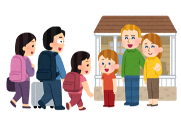
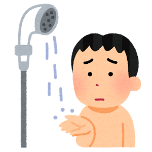
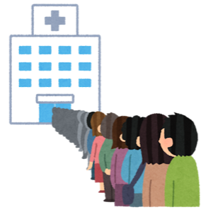
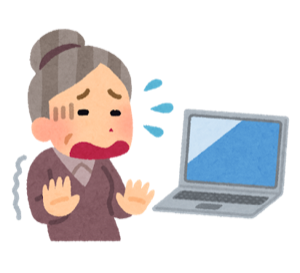
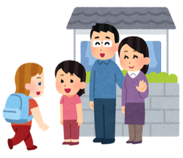
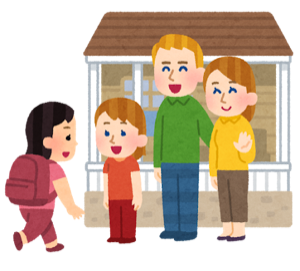

民泊のオーナーさん向けに、
「何を直すか」から「申請書の書き方」まで、
となりで一緒に進めるサービスです。
※ パソコンが苦手でも大丈夫です。お電話とお手紙でも進められます。

こんなこと、ありませんか



その工事や買い物、国の補助金で半分以上まかなえるかもしれません。
よくある3つの思いこみ

いいえ。開業届を出して、きちんと確定申告をしている小さな事業者であれば、民泊も対象になりえます。法人でなくても、個人のままで申請できます。
書く紙は、じつは2枚が中心です。「うちのお店はこういうお店です」と「今回こういうことをします」。文章の上手さより、順番が大事なだけです。
資格は要りません。ご自身で申請できます。行政書士さんに頼むと通りやすくはなりますが、受け取った補助金の1〜2割が手数料になります。
いちばん大事なところ
補助金の相談窓口は「書き方」を教えてくれます。
でも「あなたの宿は、次にどこへお金を入れるべきか」は教えてくれません。
そこを、現役の民泊ホストの目で一緒に決めるのが、私たちの仕事です。
サービスの流れ
難しい言葉は使いません。分からないところは何度でも聞いてください。
お部屋の写真、これまでのレビュー、予約の埋まり具合を見せていただきます。そこから「いま、いちばん売上をおさえている場所」を一緒にさがします。ここは現役ホストの得意分野です。
「これを直すと、どのお客さんが増えて、いくら売上が変わるか」を数字にします。そのうえで、補助金の考え方に合う形へ整えます。工事の見積は2社以上から取っていただきます。
記入例つきのテンプレートをお渡しします。書けたものを読んで「ここは伝わりにくい」と意見をお返しします。商工会議所とのやり取りや、見落としがちな締切もこちらで管理します。
申請書に文字を書くのは、オーナーさんご自身です。
私たちはとなりに座って、道順を示す係です。
お渡しするテンプレートについて
かすみは2021年に、自分の宿で国の補助金（小規模事業者持続化補助金）に採択されました。
そのときの書類が手元にあります。
お渡しするテンプレートは、その通った書き方の順番をなぞったものです。
お店のこと → お客さんの困りごと → うちの強み → だから何をするか → いくら売上が増えるか。この順番で書くと伝わります。逆から書くと落ちます。
採択されたときの決め手は、ご自身で取ったゲストアンケートでした。「こうしてほしい」という生の声が、いちばん強い根拠になります。取り方もお伝えします。
「売上が伸びます」では通りません。1組いくら、月に何組、年でいくら、何年で元が取れるか。ここまで書きます。計算は一緒にやります。
料金
「通ったら◯%」という取り方はしません。最初にお伝えした金額だけです。
じぶんで やってみる
まず みてほしい
さいごまで いっしょに
行政書士さんへ依頼した場合の相場は、着手金5万円＋成功報酬10%前後（補助金100万円なら合計15万円ほど）です。
正直にお伝えします
あとから「聞いてない」が起きないように、先に書いておきます。
わたしたちについて

熊本県で民泊を運営するホスト。始めた翌年に熊本地震が直撃し、そこから宿を立て直しました。助成金を使った事業の経験があり、民泊観光協会（JAMTA）の運営にも関わっています。制度と現場の両方を知っている数少ないホストです。
民泊オーナー向けPodcast「ゼロからの民泊ガイドラジオ」のパーソナリティ。140回以上の配信で、全国のホストの困りごとを聞いてきました。難しい言葉を、分かる言葉に直すのが仕事です。資料もテンプレートも自分で作ります。
よくあるご質問
大丈夫です。ただし申請は国のサイト（jGrants）からの電子申請で、GビズIDプライムというIDが必要です。その取得の手順も、画面を一緒に見ながらご案内します。どうしても難しい場合はご家族に操作をお願いする形でも進められます。
はい、無料です。ぜひ使ってください。私たちも「まず商工会議所へ」とご案内します。ただ商工会議所が教えてくれるのは書類の書き方で、「あなたの宿は次にどこへ投資すべきか」までは踏み込みません。そこが私たちの担当です。
制度や年によって変わります。小規模事業者持続化補助金の場合、使った経費の3分の2（赤字の場合は4分の3）が戻り、上限は50万円。インボイス特例が使えると100万円、賃上げの条件を満たすと200万円まで伸びます。最新の公募要領を一緒に確認します。
はい。補助金は「あとから戻ってくる」お金です。工事代金はいったん全額をお支払いいただきます。ここを知らずに進めると資金繰りで詰まるので、最初に必ず確認します。
「申請ばんそう」プランでは、次の回の伴走を無料でお引き受けします。落ちた理由を一緒に読み解いて、書き直して再挑戦します。持続化補助金は年に複数回の公募があります。
受けられます。やり取りはオンラインと電話が中心です。物件の診断は写真とレビューをお送りいただければ可能です。ただし商工会議所は地元の窓口をご利用いただきます。
まずは、話すところから
「うちの場合はどうだろう？」を聞くだけで大丈夫です。
その場で売り込むことはしません。対象にならなそうなら、正直にそうお伝えします。
※ 申込フォームは準備中です